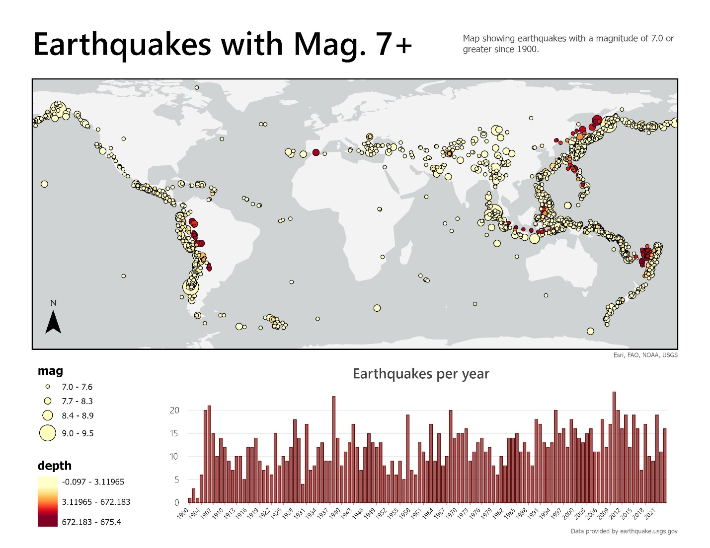
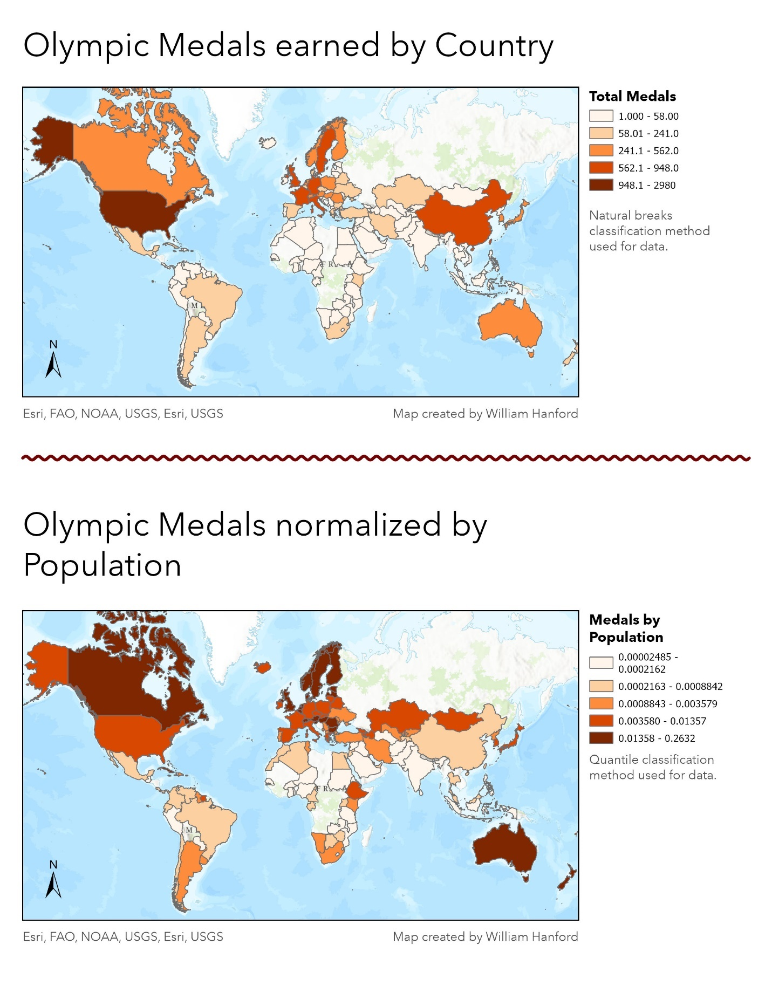
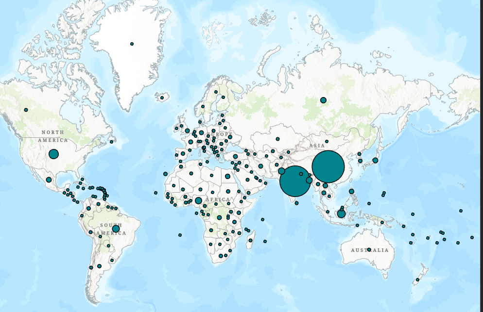
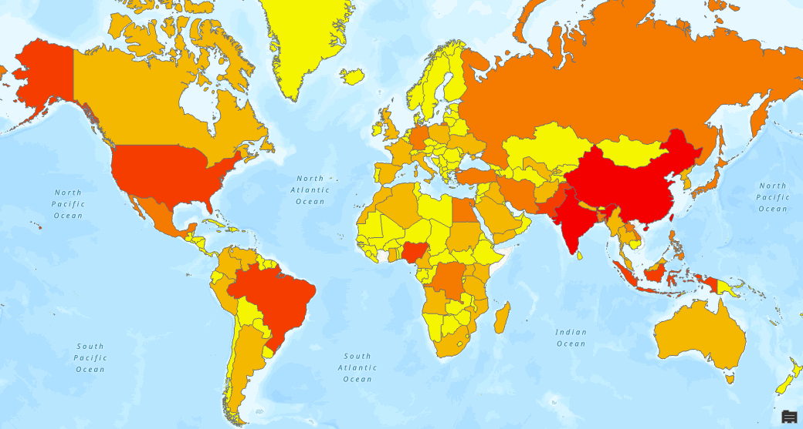
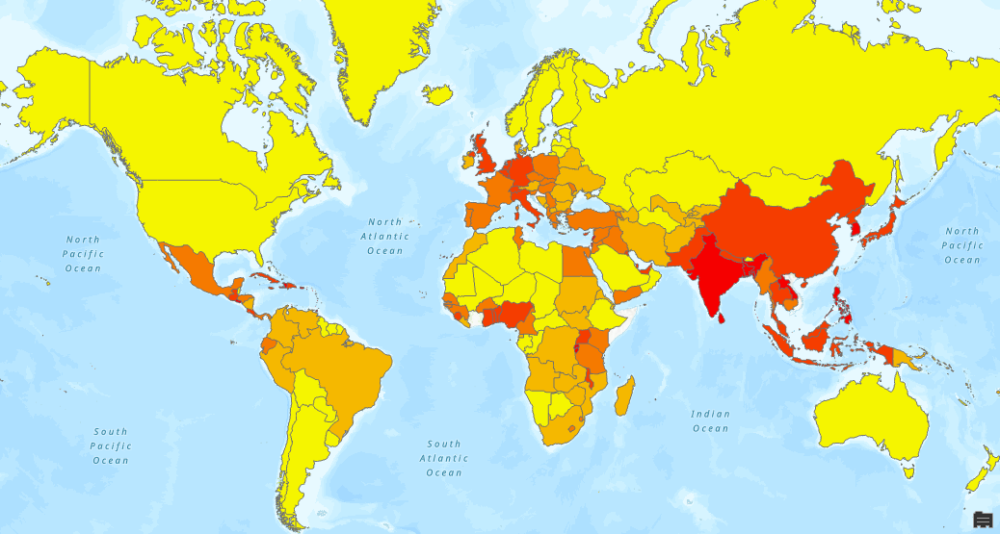
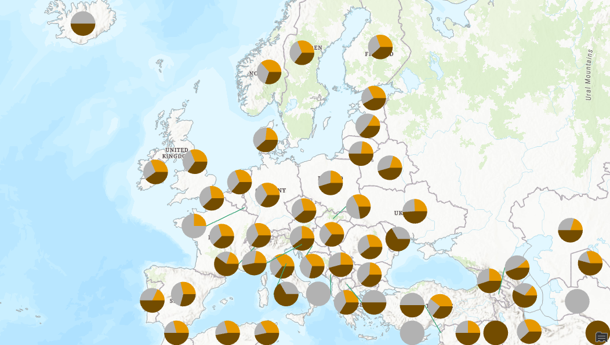

GIS Coursework / Week 04
Classifying & Symbolizing Data


Overview
Practiced different classification methods across three datasets — earthquake magnitude, population change, and Olympic medal counts — comparing how each method changes the story a map tells.
Process
Used equal interval classification for earthquake magnitude, then compared dot density, proportional symbols, graduated colors, and normalized quantile choropleths for the population and Olympic medal data.
Other maps



